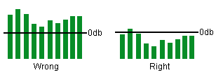
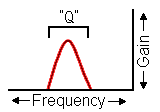

· What is a parametric EQ, and what does the 'Q' parameter do?
(Entry last updated on January 19th, 2005)The Rio Car player has one of the most powerful equalizers found on a consumer car stereo. The power comes from its fully parametric operation, something rarely found outside of professional audio recording gear. The term parametric comes from the word parameter. It means that you can adjust all of the parameters related to a given equalizer band, not just its level.
Graphic equalizers
Before we talk about parameters, let's make sure we understand graphic equalizers:
An equalizer changes the frequency response of the sound. In other words, it allows you to change the tone of the music, from high to low. For instance, Bass and Treble controls are a very coarse form of equalization. If you turn up the bass, the low notes (such as the bass guitar) are louder. If you turn up the treble, the high notes (such as the cymbals) are louder.
A graphic equalizer lets you change more than just the bass and treble. It gives much finer control, giving you a range of several frequencies to adjust. The adjustments are usually displayed in the form of a graph (hence the name 'graphic'), with each band displaying a higher or lower adjustment in relation to the others. For many analog graphic equalizers, the bands are controlled by sliders, with the knobs themselves providing the "graphic" view of the equalization curve. For computer-controlled equalizers (such as the one on the car player), the graph is displayed in LEDs or pixels.
Why use an equalizer at all?
In car stereos, an equalizer's main purpose is to compensate for variations in the listening environment and the amps/speakers. Since all cars are shaped differently and are made of different materials, it's impossible to build a stereo that sounds the same in all cars. For instance, if your car's cloth interior soaks up more high frequencies than you'd like, you can adjust the EQ to compensate for this. Or if your speakers tend to produce too many midrange tones, you can bring down the center frequencies to balance out the sound.
Better amplifiers and speakers will tend to reduce the need for severe equalization, at which point you'd mostly be compensating for the quirks of the listening environment. You must be careful not to equalize beyond the limits of your equipment. Increasing frequencies that your equipment can't properly reproduce might damage the drivers or the amplifiers. For instance, trying to turn up the bass too much in a car without a subwoofer/crossover system might blow the speakers.
Another possible use of an equalizer is to accentuate frequencies you like to hear. For example, cranking up the bass so that your car thumps with each kick drum beat. Most audiophiles would consider this an abuse rather than a legitimate use of an equalizer, but it's possible.
An important note about using digital equalizers:
Whenever possible, do your best to decrease equalizer bands rather than increase them. In a digital audio system such as the one used by the car player, you might clip the signal past 0db if you've done nothing but boost. In a digital system, this will produce hard-edged digital distortion, which sounds terrible.
For example, if you have one of your bass frequencies boosted by 10db, and you usually play your music at -6db on the volume control, then any low-frequency sounds which go louder than -4db will clip.
So if you want to boost a particular frequency band, it's better to cut the other bands and turn up the volume (or increase the gains on your amplifiers). Like so:

Proper equalizer usage
So what's this parametric thing about?
A parametric equalizer takes things one step beyond a graphic equalizer. Whereas a graphic equalizer allows you to adjust the gain (loudness level) of a given frequency, parametric equalizers let you adjust the frequency itself as well as the bandwidth, or "Q", of that frequency. These other two settings are the remaining parameters that most equalizers don't give you any control over.

Equalizer parameters
The Frequency parameter controls the "note" of the correction, from low to high. The Gain controls the volume amount of that correction, from soft to loud. The Q controls the bandwidth of the correction, or how "wide" of a frequency range gets altered, as follows:

Low Q setting |

High Q setting |
So as you can see, as you decrease the "Q" value on a boosted frequency, it drags more of the surrounding frequencies up with it. The same holds true in the other direction, i.e., if you are cutting frequencies instead of boosting them.
You can't see the alteration of the advanced parameters on the player's screen. The player doesn't provide a visual graph of changes to the Q or the frequency, because the screen doesn't have enough pixels to give a good representation. All you can do is edit the numeric value and listen for changes in the audio spectrum.
Note that by default, the Rio Car player automatically adjusts the Q parameter for you as you adjust a given frequency. It is not necessary to adjust the Q parameter unless you have a specific need to do so.
What would I use this for?
(Note: Since the operation of the equalizer has changed from version to version, we will not discuss the actual button presses required. Here, we will talk about what the parameters do rather than the exact keystrokes to change them.)
The most direct use for the "frequency" parameter would be to dial in a specific frequency that needs adjusting. For example, let's say your speakers have an unnatural peak at exactly 1575hz. By default, the player doesn't have one of its frequency bands centered around that spot in the spectrum. With the parametric features of the EQ, you can adjust one of the bands to exactly 1575hz and pinpoint that problem area for correction.
The Q is a little more esoteric, but can be just as useful. Here is one example:
Let's say you're using the equalizer in "4-channel" mode, which allows you to equalize the front speakers and the rear speakers separately. This leaves you with only five bands per speaker.
Suppose you needed to make three very fine and narrow corrections in the low registers to eliminate certain boomy harmonics coming from that cheap ported subwoofer you just bought at Circuit City. And maybe you need to eliminate a particular buzzy rattle you get from the car every time you play the bass solo in a particular song. So you use another frequency for that. For such precise pinpoint corrections, you would not only carefully dial in the frequency of each, but you would also increase the Q so that each one corrected a very narrow band.
But now you've only got one band left for the rest of the upper spectrum, even though you need a broad increase of frequencies in the upper registers. You might want to decrease the Q value of this last band to make it cover a broader range of the upper frequencies.
This complex arrangement of frequency corrections might end up looking something like this:

Complex EQ adjustments
Here is another example:
The player, by default, automatically adjusts the Q as you make the gain higher or lower. It does this to prevent a given band from dragging too many neighboring frequencies along with it. As you get farther away from 0db, the Q value increases so that the bandwidth is narrower. However, if you adjust the gain too far away from 0db, this can cause notches in the spectrum that aren't affected by the bands because the Q value is now too high for its own good.
You can't see these notches on the player's screen because it doesn't visually graph the curve of the Q parameter. But if you've got a good ear and the proper test tracks, you can hear them. So in those cases, you could adjust the Q as desired to cover exactly the bandwidth you want.
There's one thing you shouldn't do with the equalizer, though: Do not attempt to use the car player's equalizer as a substitute for a crossover circuit (high pass filter and/or low pass filter). This doesn't work, I've tried it. It doesn't completely attenuate a given frequency, and no matter how much you play with the Q, you can't get it to do a proper 'shelving' cutoff. If you need to do a crossover, use a proper crossover circuit. Many good amplifiers today have variable-frequency crossovers built into them.
I don't get it!
Don't worry if this doesn't make sense to you. It's probably safe to say that if you don't understand why someone would want to adjust these settings, then you probably don't need to adjust them yourself. This is a highly technical and very powerful feature that's only needed in very specific situations by very picky audiophiles.
The good thing is that you don't need to understand the parametric features to use the equalizer. For most users, the regular default bands are fine and you can use it like any other graphic EQ.
I get it, but how do I actually do it?
Please refer to the manual and/or the Button Guide for information on how to operate the player's features.
Also have a look at The empeg Sound Page, created by Brad B. from the Unofficial empeg BBS. He gives instructions on how to set up the equalizer on your player, along with other tips on getting the best sound from the player.
|